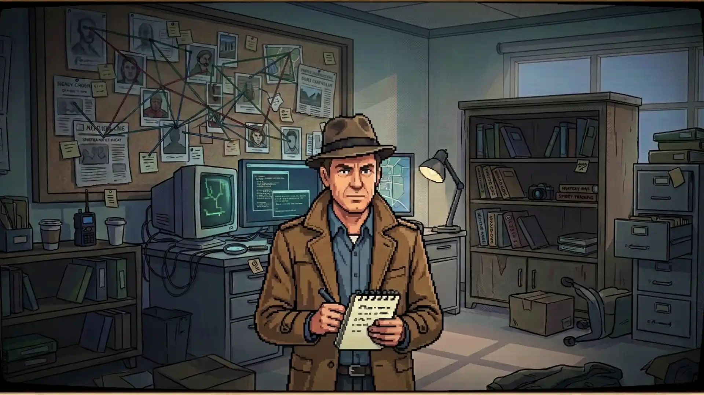
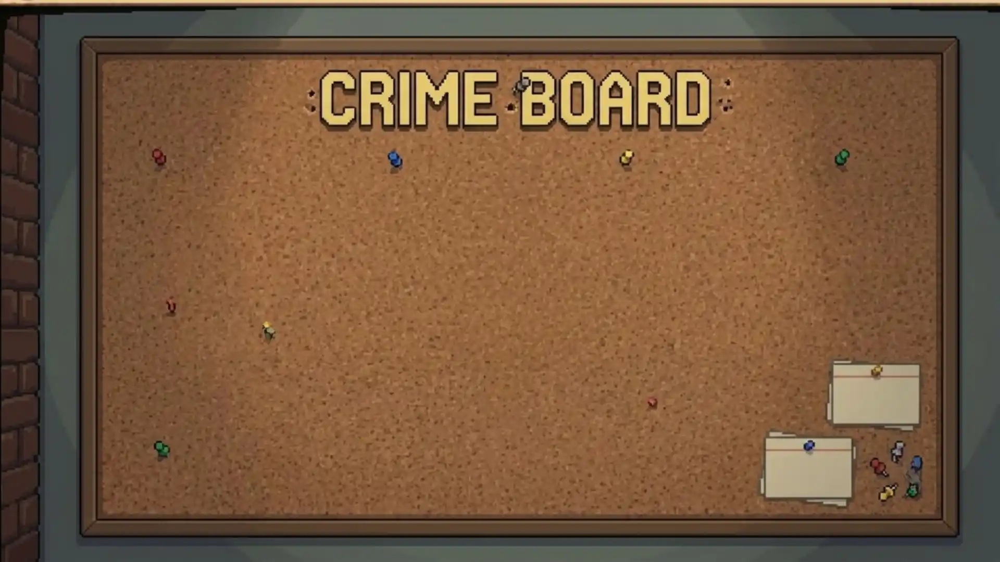

A detective adventure. In your browser. No trench coat required.
MARK AGENCY / INTERNAL USEEXHIBIT A

YOUR NEXT QUESTIONABLE CAREER MOVE.01 / HQ
CLASSIFIED
1CAREER OPPORTUNITY Handle with reasonable suspicion.
STOLEN ARTEFACTS / QUESTIONABLE ALIBIS / INTERNATIONAL PAPERWORK / YOUR PROBLEM NOW
01 / BACKGROUND CHECK
One missing husband. A whole agency of questions.
ACTIVE INVESTIGATION
CLIENT STATEMENT / PERSONAL INQUIRY
A woman walks into your office. Her husband is missing. His last known employer: Mark Agency, specialists in recovering stolen artefacts.
So you take a job there. Solve their cases. Earn their trust. Get access to the rooms — and the people — that might know more than they’re saying.
Somewhere between the official assignments and your own investigation, things stop adding up.
02 / JOB DESCRIPTION
Do the detective work. Not just the clicking.
Good instincts help. Actual evidence helps more.
01
Find what they missed.
Search crime scenes, collect evidence and put your findings through the lab. A suspicious mark is only useful if you can explain it.
SEARCH / ANALYSE / RECONSTRUCT02
Follow the trail.
Check alibis, question witnesses and chase leads across borders. The culprit is moving. Your travel budget is not infinite.
QUESTION / TRAVEL / PURSUE03

Make the case stick.
A name is not a case. Connect the suspect, motive, means and opportunity — then defend your conclusions in court.
CONNECT / ARREST / PROVE
03 / AFTER OFFICE HOURS
Agency business. Private business. Same detective.
Recover stolen artefacts for Mark Agency. Back in your home town, take private jobs, build up your own office and work the leads that don’t belong in an agency report.
OFFICIAL FILE
Mark Agency
International cases. Stolen treasures. A clock that keeps ticking.
PLEASE KEEP YOUR RECEIPTS.PERSONAL FILE
Private investigator
Your town. Your office. Your unfinished business.
PLEASE MIND YOUR OWN BUSINESS. THIS IS IT.
APPLICATIONS ARE STILL OPEN
Your desk is waiting. Your first mistake is up to you.